Case Compass
User Manual · Version 3.0 · November 2026
Document facts. Preserve evidence. Protect safety. Organize next steps.
A privacy-first case management tool for documenting events, organizing evidence, tracking timelines, preparing reports, and finding legal and personal safety resources in Colorado and Pueblo County.
Screenshots in this manual show clearly labeled fictional sample data. A new installation starts empty.
Contents
- What Case Compass is (and is not)
- Installing
- Your private vault and passphrase
- Locking, Quick Exit, and privacy limits
- The Home screen
- Documenting events
- Evidence
- Timeline and search
- Parenting
- Calendar, tasks, and deadlines
- Attorney Workspace
- Resources
- Protection & Security
- Court forms
- Reports and exports
- Backup, restore, and new devices
- Importing earlier records
- Settings and data tools
- Troubleshooting
- Legal notice
1. What Case Compass is (and is not)
Case Compass is one dependable place to keep accurate records of a complicated family situation over months or years. It helps you:
- write down events, communications, and parenting time accurately and consistently;
- keep evidence with a record of where it came from, without changing the originals;
- track appointments, court dates, and deadlines that come from official papers;
- prepare organized reports for yourself or an attorney;
- find verified Colorado and Pueblo County legal, safety, family, and technical resources; and
- work through practical safety and security checklists.
2. Installing
Case Compass runs in your web browser and works offline after the first visit. It must be opened from a secure web address (HTTPS) or from http://localhost on your own computer. Full steps are in INSTALL.html, included with the app.
iPhone or iPad
- Open the Case Compass address in Safari.
- Tap Share › Add to Home Screen › Add.
- Open Case Compass from the new Home Screen icon and create your vault there.
Computer
Open the address in Chrome, Edge, Safari, or Firefox (Chrome and Edge can install it as an app window). To run it yourself, open a terminal in the Case Compass folder, run python3 -m http.server 8080, and visit http://localhost:8080.
3. Your private vault and passphrase
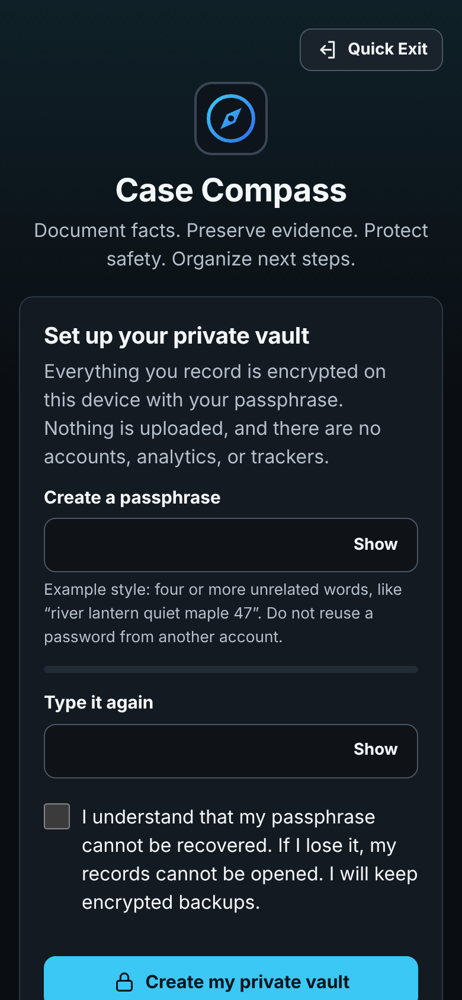
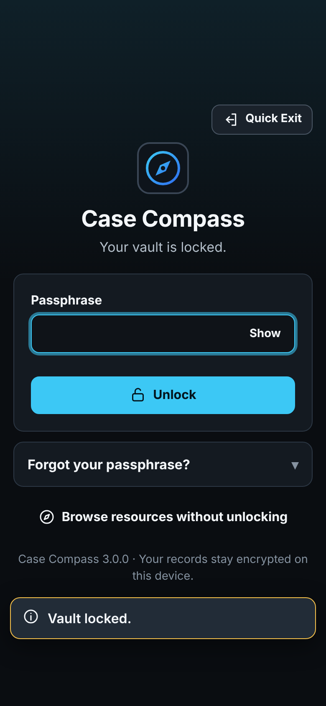
The first time you open Case Compass, you create a vault: the encrypted storage for everything you record. Choose a passphrase of at least 12 characters. Four or more unrelated words (for example, “river lantern quiet maple 47”) are strong and easy to remember. Do not reuse a password from another account.
Everything is encrypted on your device with AES-256-GCM using a key derived from your passphrase (PBKDF2-SHA-256 with 600,000 iterations). Nothing is uploaded. There are no analytics or trackers.
If you type the wrong passphrase, the vault stays locked and tells you. Check Caps Lock and the keyboard language.
4. Locking, Quick Exit, and privacy limits
- Automatic lock: the vault locks after a period of inactivity (5 minutes by default; change it in Settings). You can also lock when the app is hidden.
- Lock now: the padlock button at the top.
- Quick Exit: the Exit button at the top (or Esc three times on a keyboard) locks the vault and replaces the page with a neutral website.
5. The Home screen
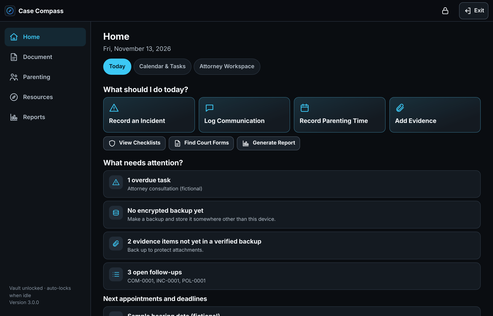
Home answers four questions:
- What should I do today? One-tap buttons: Record an Incident, Log Communication, Record Parenting Time, Add Evidence, plus shortcuts to checklists, court forms, and reports.
- What needs attention? Overdue tasks, backup reminders, evidence not yet in a verified backup, open follow-ups, and the next 30 days of appointments and deadlines.
- What have I documented? Counts, a 30-day parenting-time summary, security checklist progress, backup status, and recently saved records.
- Where do I find help? Emergency numbers, legal help, and the Protection Center.
The five sections are Home, Document, Parenting, Resources, and Reports. Tabs under each title move between related pages. The Case Compass logo always returns you to Home, and the back arrow returns to the previous page.
6. Documenting events
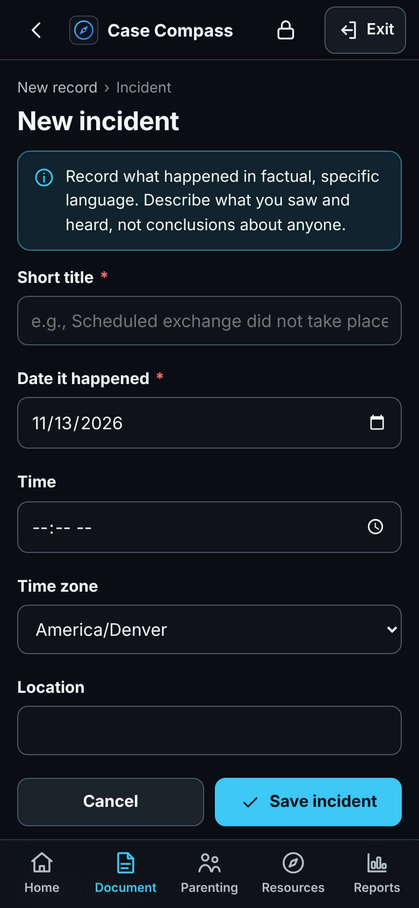
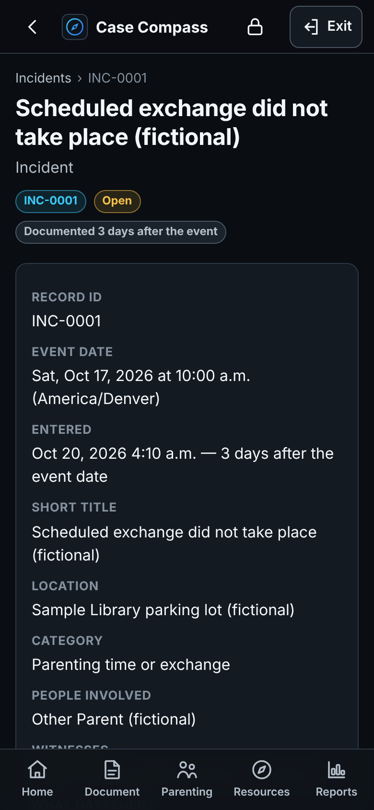
Choose New record (or a Home button) and pick a type. Required fields are marked with a red asterisk. Each saved record gets a stable ID such as INC-0001 that appears in every report.
| Record type | Use it for |
|---|---|
| Incident | What happened, what you personally observed, who was present, exact statements (only if you remember them), evidence, police involvement, and what happened afterward. |
| Communication | Calls, texts, Messenger, email, and in-person conversations, including parenting-time requests and unanswered messages. |
| Parenting-time entry | Scheduled, requested, and completed time; overnights; exchanges; cancellations; denied requests; school, medical, and activity involvement. |
| Child / Child statement | One profile per child. Statements are only for things a child said on their own, in their exact words. |
| Police / official contact | Agency, officer, case and report numbers exactly as given, records requests, and follow-ups. |
| Residence / property | Access, keys, belongings, notices, and lease or ownership information. |
| Evidence | Photos, screenshots, PDFs, audio, video, documents, or a reference to an original stored elsewhere. |
| Expense | Child-related expenses, support payments, and case costs. |
| Task / Attorney | Appointments, deadlines, and consultations (see sections 10 and 11). |
Writing factual records
- Write soon after the event, with specific dates, times, and places.
- Mark whether you saw it yourself or were told about it.
- Quote exact words only when you are sure of them.
- Describe actions, not conclusions or labels about anyone. Do not assume any allegation is true because it was made.
Every record shows both the event date and the date it was entered. If you write about something days later, that is fine; the record says so openly. Never backdate.
Editing keeps history
Editing a record saves a new version. Earlier versions are kept and can be viewed under History › Show version history. An encrypted change log (Settings › Change history) lists every creation, edit, export, import, and backup.
Drafts and accidental navigation
While you type, Case Compass saves an encrypted draft every second. If the browser closes or the phone restarts, open the same form again and choose Restore draft. If you try to leave a form with unsaved text, the app asks first. Attached files are not kept in drafts.
Linking records
Use Link on any record to connect related incidents, messages, evidence, and tasks. Links appear on both records. One evidence item can be linked to many records without storing the file twice.
7. Evidence
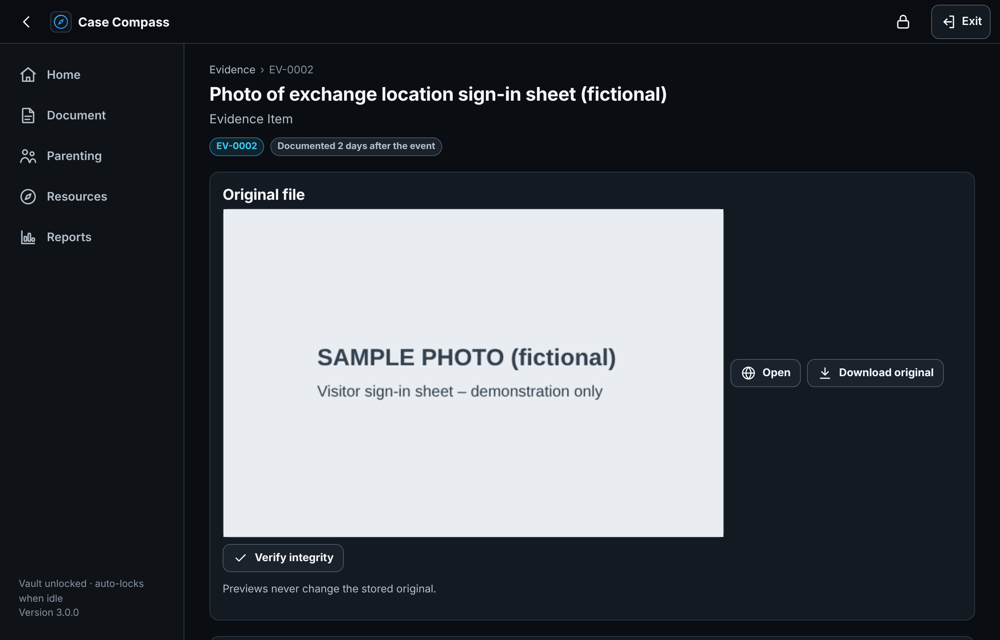
When you add a file, Case Compass stores the exact original, encrypted, and records its SHA-256 fingerprint. If the file were ever changed, the fingerprint would no longer match; use Verify integrity to check. Previews never change the original. Download original gives you the identical file.
- Record the original source, the device or account, and the date it was created or received.
- Note where the original lives if it is outside the app, and each time it is copied or handed to someone.
- Cropped, annotated, or compressed versions should be added as separate evidence items with “Modified copy of” pointing to the original.
- Commentary is stored separately from the file.
On iPhone, “Add photos or files” offers your Photo Library, the camera, and the Files app.
8. Timeline and search
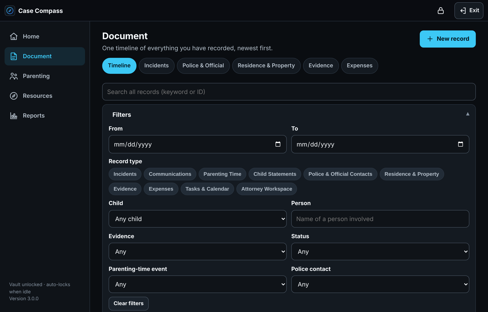
Document › Timeline shows every record in one chronological list, newest first. Filter by date range, record type, child, person, keyword, evidence status (including “not in a verified backup”), open or resolved, parenting-time event, and police contact. Tap any entry to open the full record. Badges show open items, attachments, and entries written later than the event.
9. Parenting
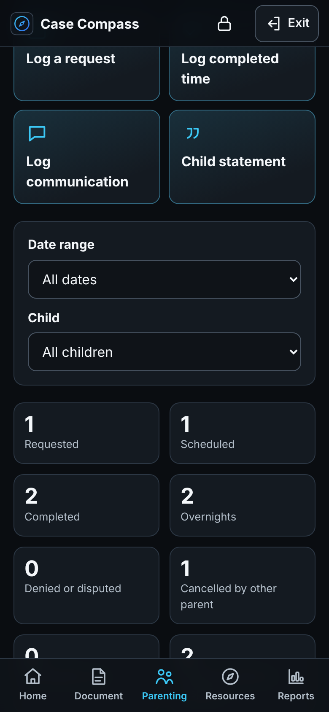
The Parenting overview compares requested, scheduled, and completed parenting time for any date range and for each child, with overnights, denied or disputed requests, cancellations by each parent, and requests that received no response. Both successful and unsuccessful parenting time are shown.
Equal parenting time can be your stated goal. Colorado courts decide parenting time based on the children's best interests (C.R.S. § 14-10-124). The Parenting-Time Preparation Checklist in Resources › Guides lists practical steps.
10. Calendar, tasks, and deadlines
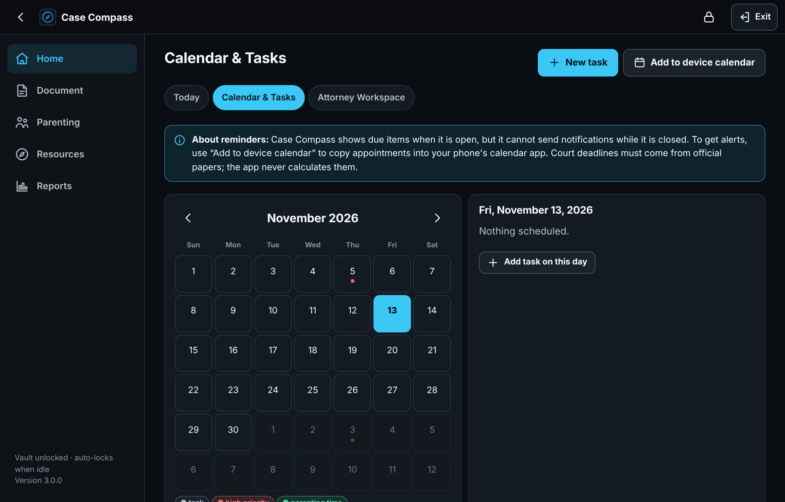
Add appointments, attorney consultations, filing deadlines, hearings, parenting classes, therapy appointments, document requests, police follow-ups, and security tasks. Each has a priority, date, status, completion date, and links to related records.
- Court dates and filing deadlines require a source (for example, “Notice of hearing dated Oct 3, 2026”). Case Compass never calculates legal deadlines.
- Reminders: Case Compass shows what is due when it is open, but it cannot notify you while closed. Use Add to device calendar to create a calendar file (.ics) for your phone's calendar, which does send alerts. You can choose generic titles so your calendar does not reveal details.
11. Attorney Workspace
Record each attorney or consultation: name, firm, contact details, date, fees, questions to ask, documents requested, the advice as you understood it, follow-ups, and representation status. Create packet builds an Attorney Preparation Packet with your questions, key dates, a timeline summary, the parenting-time comparison, police contacts, and an evidence index. Private notes, earlier attorneys' advice, and detailed child information are left out unless you choose to include them.
12. Resources
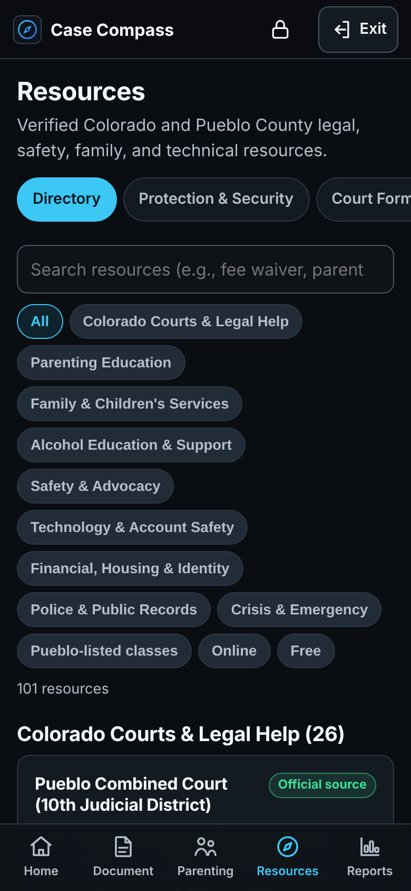
The directory lists verified resources in nine sections: Colorado Courts & Legal Help; Parenting Education; Family & Children's Services; Alcohol Education & Support; Safety & Advocacy; Technology & Account Safety; Financial, Housing & Identity; Police & Public Records; and Crisis & Emergency. Search, filter by section, or show only Pueblo-listed classes, online, or free options.
Each card shows the purpose, phone (tap to call), location, cost, format, limitations, a recommended next step, the source type, and when the link was last checked. Parenting-class details (prices, formats, and Pueblo County listing) come from the Colorado Judicial Branch provider directory. Retired entries are marked rather than removed. Resources can be browsed without unlocking the vault, and a spreadsheet of your own resources (saved as CSV) can be imported.
13. Protection & Security
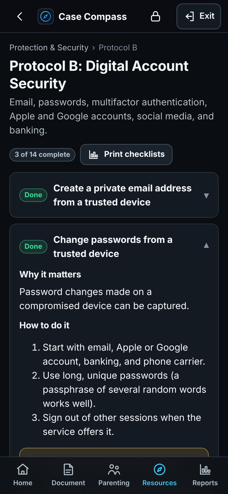
Seven independent protocols: A Immediate Personal Safety, B Digital Account Security, C Phone and Computer Security, D Physical Surveillance and Vehicle Safety, E Residence and Personal Security, F Financial and Identity Protection, and G Legal and Evidence Organization. Each step shows what to do, why it matters, how to do it, safety or legal considerations, and supporting resources. Mark steps complete, record the date and private notes, and link related evidence. Progress is saved in the encrypted vault.
14. Court forms
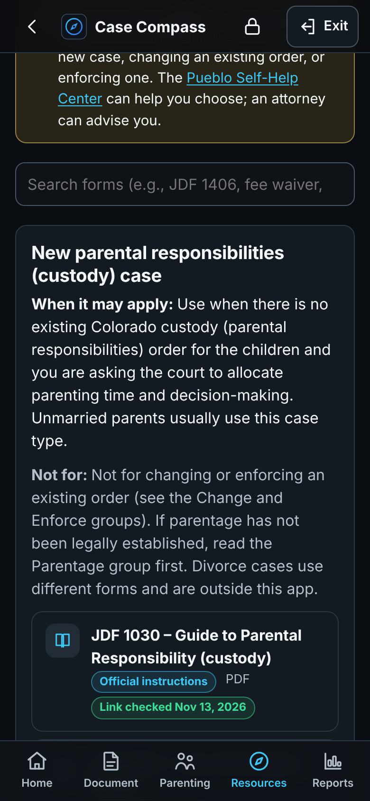
Official Colorado Judicial Branch forms are grouped by situation: a new parental-responsibilities case, establishing parentage, changing parenting time, changing decision-making, enforcing an order, protection orders, fee waivers, serving papers, mediation, general filings, relocation, and (with a strong legal-review warning) residential evictions. Each group explains when it may apply and what it is not for. Instructions and forms are labeled separately, and proposed orders are marked as having no effect unless a judge signs them. Case Compass does not fill out or file forms and never creates documents that look court-issued.
15. Reports and exports
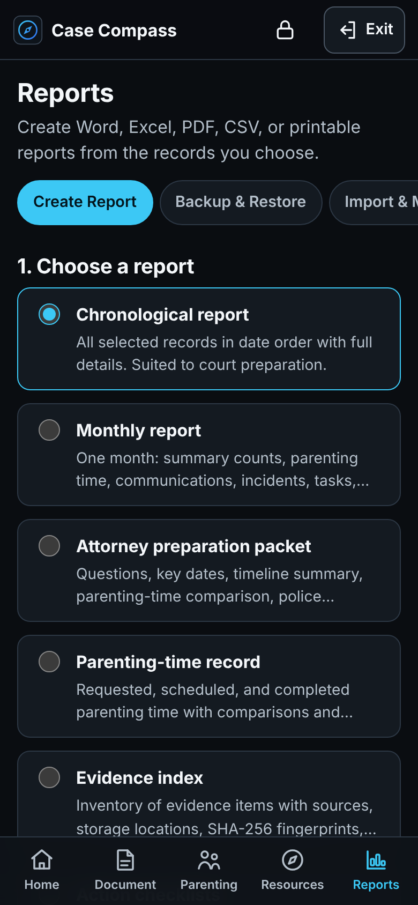
- Choose a report: chronological, monthly, attorney preparation packet, parenting-time record, evidence index, action checklists, selected categories, or blank printable forms.
- Choose records: all records, one week, one month, a custom date range, or one record.
- Choose privacy options: private notes are excluded unless you include them; children can be shown by name, by initials with details left out, or excluded.
- Create a PDF (US Letter), Word (.docx), Excel (.xlsx with 12 sheets), CSV, or a print view for Print / Save as PDF.
A preview lists the record IDs that will be included. Every report shows its date range, generation date, and record IDs, plus a notice that it is the author's own summary. Exports are not encrypted; the download window says so. On iPhone, choose Share › Save to Files. A complete case archive (.zip with reports and every original evidence file) is also available.
16. Backup, restore, and new devices
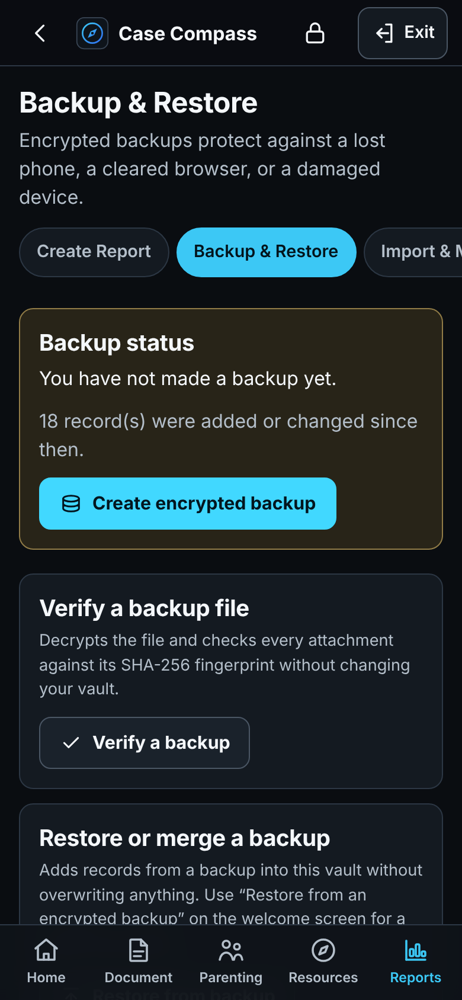
Create encrypted backup saves everything (records, Trash, version history, change log, settings, checklist progress, and attachments) into one encrypted .ccbackup file. You can protect it with your vault passphrase or a separate backup passphrase. Before you download it, Case Compass decrypts it again and checks every attachment's fingerprint.
- Keep at least one backup somewhere other than this device (Files/iCloud Drive, a USB drive, or a cloud folder only you control).
- Verify a backup checks a file without changing your vault.
- Restore from backup merges a backup into your vault without overwriting anything: if a record differs, the newer version becomes current and the other is kept in history. A restore point is made first.
- New device: Case Compass does not sync. Copy the backup file to the new device and choose “Restore from an encrypted backup” on its welcome screen.
17. Importing earlier records
Reports › Import & Migration brings in records from an earlier family-law planner (JSON export or backup), from a spreadsheet saved as CSV, or from planner data stored in this browser at the same address. Every import shows a preview first, keeps every original field with the imported record, preserves original IDs and creation dates when present, skips anything already imported, and creates a restore point so it can be undone. Encrypted planner files ask for that planner's passphrase; if the format cannot be read, export it from the earlier planner as JSON.
18. Settings and data tools
- Security: auto-lock time, lock when hidden, Quick Exit destination, change passphrase.
- Reports: the “Prepared by” name and matter description shown on reports.
- Appearance: dark (default), light, or match device; default time zone (Mountain Time).
- Storage: how much space is used and whether the browser will keep data persistently.
- Trash: deleted records can be restored or permanently deleted.
- Restore points: roll back after an import or restore.
- Drafts and data health: discard old drafts; see whether any stored item could not be read.
- Delete vault: permanently erases everything in this browser (requires your passphrase).
19. Troubleshooting
| Message or problem | What to do |
|---|---|
| “Open Case Compass from a web address” | The file was opened directly from a folder. Use the HTTPS address or http://localhost:8080. |
| “Secure storage is not available” / “Storage is blocked” | Usually private browsing or a privacy setting. Use a normal window. Records are never stored without encryption. |
| “Storage is full” | Make a backup, then remove large files you no longer need. Your text is kept as a draft. |
| A report did not open in a new window | Pop-ups were blocked; the print view is downloaded instead. Open it and print. |
| “An updated version is ready” | Choose Update now when you are not in the middle of typing. |
| Forgot passphrase | It cannot be recovered. If you have a backup and remember its passphrase, erase the vault from the lock screen and restore the backup. |
20. Legal notice
Case Compass is an organizational and educational tool. It does not provide legal advice, create an attorney-client relationship, guarantee any outcome, or replace legal representation. Resource information was compiled from official and provider sources in November 2026; services, prices, hours, and forms change, so confirm before relying on them. No security measure is absolute. In an emergency, call 911. For confidential domestic violence support in Pueblo, call Mariposa Center for Safety at 719-545-8195 (24 hours). For a mental health crisis, call or text 988.